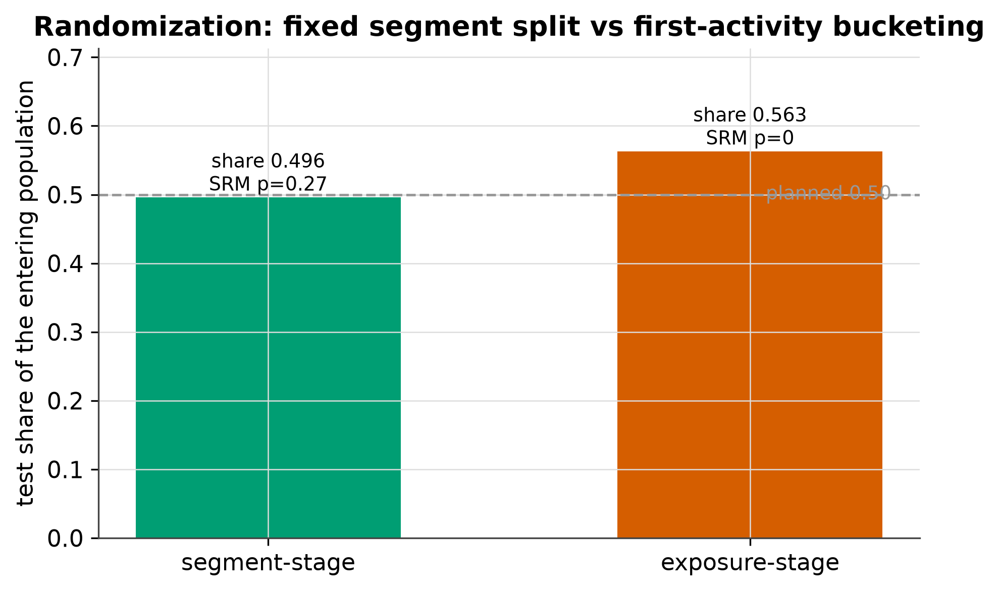
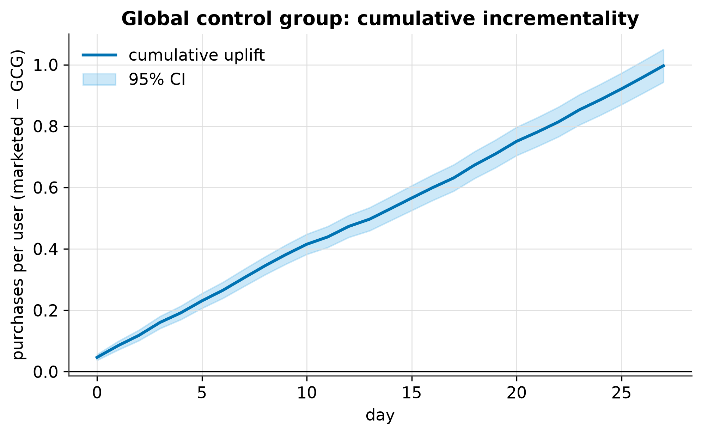
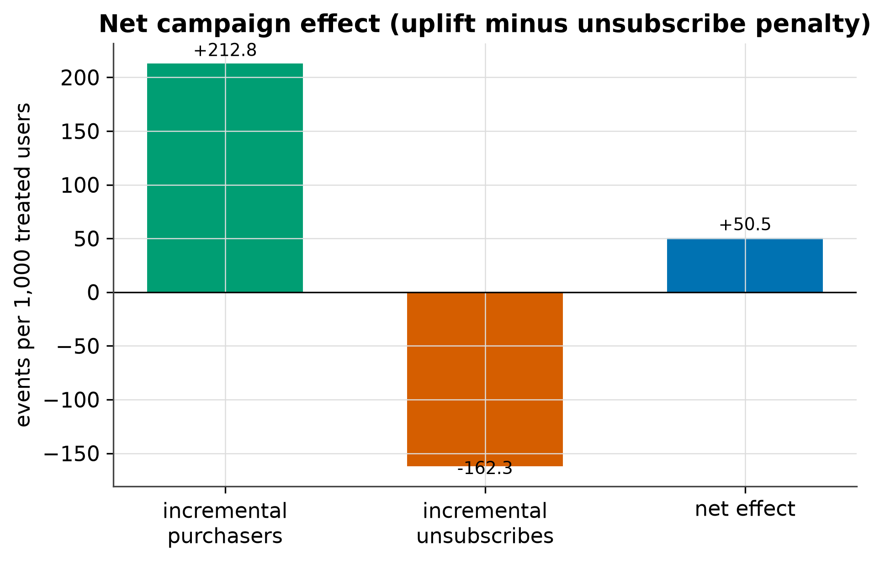

Verdict
incremental purchasers minus incremental unsubscribes
+212.8 incremental purchasers − 162.3 incremental unsubscribes → net +50.5, a positivity / negativity ratio of 1.311.
The net effect is a point estimate. The experiment’s 95% confidence band belongs to the GCG uplift: +0.9968 per user by day 27, 95% CI [+0.9433, +1.0502], which excludes 0.
Guardrail status
1 of 2 breachedDesign
CRM randomizes once, at segment-formation time, because the same user is targeted by many campaigns. The send balancer enforces the daily cap; the SRM check confirms the split behaves as planned.
| Stage | Test share | SRM p | Reading |
|---|---|---|---|
| Segment (CRM-correct) | 0.4958 | 0.266 | Balanced |
| Exposure (product-style) | 0.5629 | ≈ 0 | Fires |
Exposure-stage bucketing drops the part of the control arm that arrives later, so the entering population no longer matches the assigned one.

Results
The primary metric moves, the global control group confirms the cumulative uplift, and the churn cost is priced into the net.
The revenue OEC agrees: mean revenue per user rises from 608.3699 to 1180.5793, a difference of +572.2094 (Welch t = 40.419).
95% CI [+0.9433, +1.0502]. The band excludes 0, so the cumulative uplift is distinguishable from no effect on this run.
Last three simulated days: day 25 +0.9215 [+0.8702, +0.9728] · day 26 +0.9587 [+0.9063, +1.0110] · day 27 +0.9968 [+0.9433, +1.0502].

Why it matters. A full reshuffle replaces the control baseline, so the uplift trend jumps for reasons unrelated to campaign performance. A partial rotation keeps the baseline stable — CV 0.3280 versus 0.0090 — which is what makes the day-27 uplift readable.
A campaign pays off only when the incremental purchasers it drives outnumber the incremental unsubscribes it causes. Both sides are priced per 1,000 treated users, so the sign of the net is directly readable. Churn priced at one month of ARPU per unsubscribe: control 485 unsubscribes / 242500.0000 lost revenue; GCG 129 / 64500.0000; test 1918 / 959000.0000.
Per-campaign balance is uniform in this run: campaigns 1, 3, 5, 7, 9 and 11 each score positivity 203.4716, negativity 137.3521 and net 66.1194 — all positive.

Guardrails
A single headline metric is never optimized alone. Guardrails can block a launch on their own; here the unsubscribe guardrail does.
| Metric | Control | Treated | Delta | Threshold | Status |
|---|---|---|---|---|---|
| unsubscribe_rate | 0.0537 | 0.2160 | +0.1623 | 0.0000 | Breached +302.1% · p < 1e-300 (Holm-adjusted) |
| notifications_per_user_per_day | 0.0000 | 3.0000 | 3.0000 | 3.0000 | Holds hard cap · 0 violations |
Family of 2 guardrails, Holm-corrected. A threshold of 0.0000 means the unsubscribe rate may not rise at all.
orders_per_user
aov
exposure_rate
notifications_per_user_per_day
Caveats
Not reproducible from the shipped sample CSV
data/experiment_sample.csv is a 300-row outcomes-schema example with
no group column. The uplift and net figures cannot be recomputed from
it. They come from the simulator: run
scripts/run_full_pipeline.py with 20,000 users, 28 days, 12 campaigns
and seed 42 to regenerate them.
- Every number comes from a synthetic simulator. It is a known data-generating process: no inter-user interference, no bots, no delayed conversions, no logging loss, and the planted lift is constant in time. The lab is a single-experiment playground, not an experimentation platform.
- One seed. The GCG and exposure-window comparisons are estimators exercised on one run, not a power study. The primary A/B test is powered at 80% for an MDE of 0.06765 with 751 users per group.
- The net effect is a point estimate. The 95% confidence band on this page belongs to the GCG cumulative uplift; the net-of-churn figure is a deterministic construction from the uplift and unsubscribe counts.
- The exposure window is not a free variance cut. Dropping rows always raises a proportion’s standard error, so on the default persistent-effect simulator the windowed SE (0.00124) is larger than the all-days SE (0.00066); its value shows up on a transient-effect DGP.